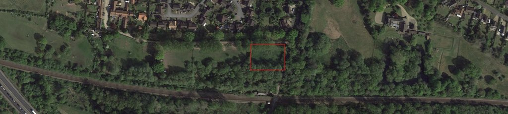

This is more than just a field
The land at the end of Meadow Farm Drive might look empty now, but it's not just any piece of grassland. It’s part of a designated County Wildlife Site (CWS 199) – an important natural buffer between the urban area and the woodland, and a designated area that supports:
- 🦔 Hedgehogs, otters, bats, and water voles
- 🐦 Kingfishers, Yellowhammers, Song Thrushes & more
- 🌱 Rare plants like Pignut and Norfolk Comfrey
- 🦎 Reptiles and amphibians including slow worms and common toads
- 🦇 Up to 7 species of bat foraging along the ditch and tree line
📄 Learn more: Download the full County Wildlife Site report here:
199 Meadow Farm Meadow – CWS Citation PDF
199 Meadow Farm Meadow – CWS Citation PDF


What’s happening?
A developer has applied to build a house on this land (Planning ref: 2025/1376).

Public consultation is now closed and South Norfolk Council will soon be considering the application. Their target for a decision is currently mid July.
Want to see the full application?
Click here to view it on the Council’s planning portal: